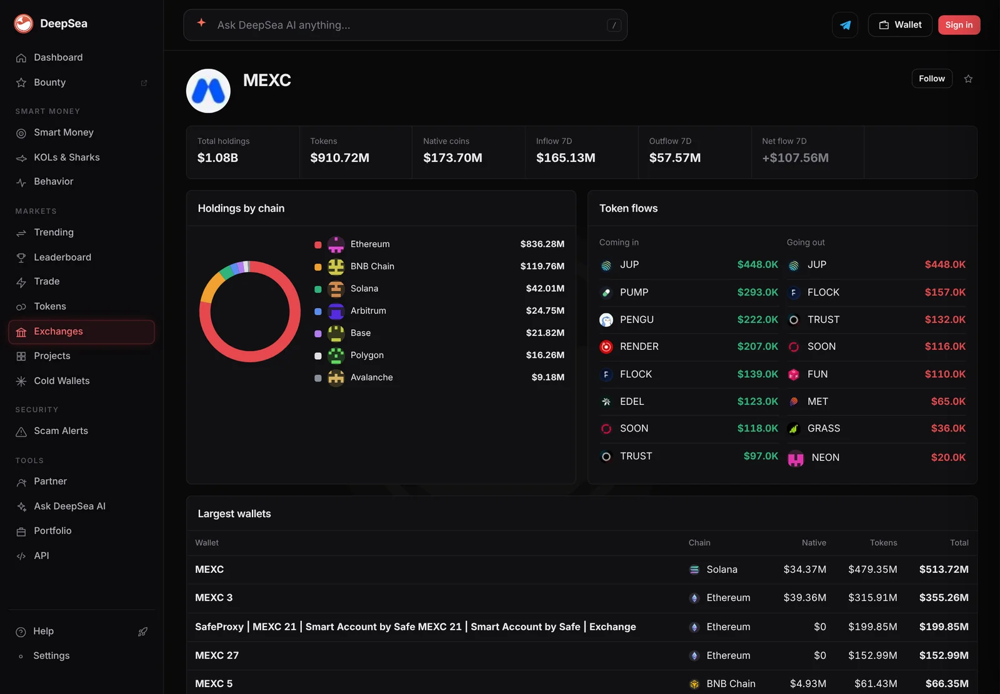
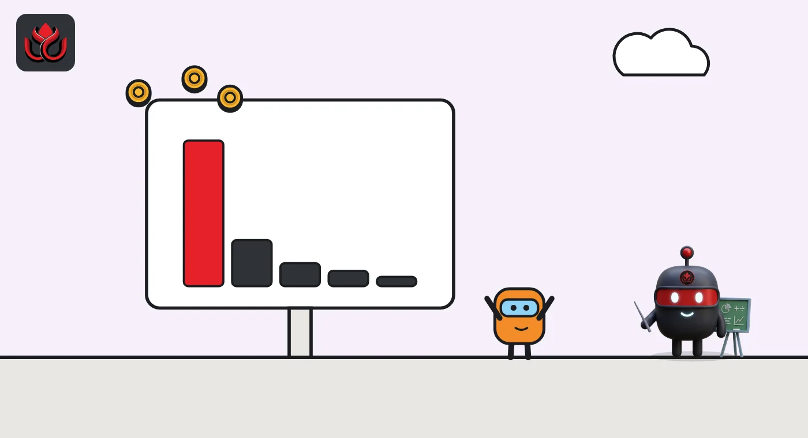

MEXC took in a net $107.6 million in seven days, more than any other exchange
Among the exchanges DeepSea tracks, MEXC topped the seven-day inflow table while OKX, Gate, Bybit and Bitget all saw net outflows.
Key points
- MEXC's wallets took in $165.13 million and sent out $57.57 million over seven days, a net plus $107.56 million, DeepSea showed at 12:39 a.m. ET on November 5, 2026.
- That inflow is about one-tenth of MEXC's tracked holdings of $1.08 billion.
- The next biggest net inflow was Crypto.com at plus $24.08 million. OKX was at minus $244.07 million.
 What DeepSea's data shows
What DeepSea's data shows
DeepSea's MEXC page tracks 73 wallets on 13 chains that it labels as MEXC. At 12:39 a.m. ET on November 5, 2026, they held $1.08 billion: $910.72 million in tokens and $173.70 million in native coins.
Over seven days, $165.13 million came in and $57.57 million went out. The net, plus $107.56 million, was the largest seven-day net inflow on DeepSea's exchanges list, which we read at 12:41 a.m. ET.

Data: DeepSea (desea.io), checked November 5, 2026, 12:39 a.m. ET.
Where the money sits
For a sense of scale, the inflow is about 10% of MEXC's tracked holdings in a single week. Binance, more than 100 times bigger by holdings, saw net money leave.
Most of MEXC's tracked holdings are on Ethereum ($836.28 million), then BNB Chain ($119.76 million) and Solana ($42.01 million). The largest single wallet, on Solana, holds $513.72 million.
The token flow list does not explain the inflow. Its top incoming token, JUP, shows only $448,000, and the same amount going out. So the bulk of the $165 million came through assets or wallets that the top lists do not break out. We do not know which.
The numbers
Seven-day net flows on DeepSea's exchanges list, for exchanges that show a figure (Binance, at minus $1.55 billion, is left off the chart for scale).
Exchange net flow, 7 days to 12:41 a.m. ET, November 5, 2026
US$ million
Source: DeepSea, exchanges list, read November 5, 2026, 12:41 a.m. ET.

Where money left
Outflows beat inflows at most large exchanges. OKX shows minus $244.07 million, Gate minus $51.12 million, Bybit minus $37.13 million and Bitget minus $22.10 million. Korea's Bithumb (minus $1.04 million) and Japan's Coincheck (minus $1.34 million) were close to flat. Several big names, including Kraken and Coinbase, show no seven-day figure on the list.
What to watch
An exchange inflow can be users depositing, market makers moving inventory or the exchange shifting its own coins. DeepSea shows the wallets, not the reason. A one-week jump can also reverse fast. We will watch whether MEXC's balance keeps rising or the money leaves again, and whether the token list starts to show which coins carried the inflow.
LC Insight analysis
This section is our reading of the facts above, not a statement of fact.
- We think an inflow this large for an exchange of MEXC's tracked size is worth following, but without a token breakdown it says little about buying or selling.
What's next
- MEXC's seven-day net flow on DeepSea
- Whether OKX's outflow keeps growing
Disclaimer. This article is based on public information and the sources listed below as of the update time shown. It is for information only and is not investment, legal or tax advice. Figures may change as companies and authorities publish new data.